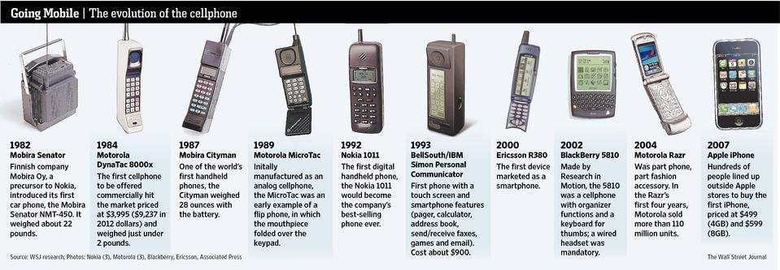

INTRODUCTION

Have you ever realized that the save button on your computer is represented by a tiny depiction of a floppy disk? An object which people nowadays do not use anymore. Most young children might not even recognize it at all. They have never seen this in real life and certainly never used it for storing their files. Because within a short time the floppy disk was replaced by other saving formats like CD-Roms, USBs, hard-disks and the Cloud, and the icon in the Graphical User Interface (GUI) on our screens did not change accordingly, the significance of the original object (the floppy disk itself) is replaced by that of the digital significance for people that did not experience the object in its original form.
This lead me to my research question: In what way does the design of interface symbols and icons affect the way we see the (physical) world, and, considering the future, should we re-think their design accordingly?
Because of the huge amount of time we spend behind our computers and on our phones, icons and symbols have gained a more important role in our daily lives. Huge amounts of data are presented to us daily and icons and symbols visualize quickly what words can’t say in the same amount of time. Unfamiliar digital spaces are explained through GUI. How this is done, what it means when an icon outlives the object it is based upon, what that means for the interpretation and what influences the design of the icons is explained in this thesis.
The main focus of this thesis will be the evolution of significance of interface signs on a screen and the influence icons and symbols have on the physical objects they represent. Like the floppy disk (the object) becoming a 3D-printed save button (the digital representation). This thesis explores how significance is created for icons and symbols, how they can lose their meaning and when we might need to replace or get rid of them. The life and death of digital signs and when to kill them.
1. GUI
When the personal computer entered the consumer market in the nineteen-eighties, everything changed. It was (and still is) an instrument of infinite possibilities. A palette of tools which could accommodate nearly any process with immediate results. Computers had already existed for a while, but because of it’s difficult to use command line, text-based interfaces could only be used by scientists. When the those interfaces were replaced (although you can still use command line) by a visual interface (GUI) they were more accessible and thus the personal computer made it to the general public and became a integral part of our (daily) lives.
At this moment in time, life without computers seems unthinkable. New software products such as computers and smart-phones give us access to the huge, growing flow of information on the internet, and new programs and applications are developed for them every day. New (and improved) digital devices appear on the market faster than we can keep up with. To grasp the vast amount of (digital) information we are exposed to, and to manage and control the complex situations in which we find ourselves, Graphical User Interface (GUI) design is becoming progressively more important to all aspects of life.
1.1 WHAT IS GUI
We communicate (“speak”) via our computers, but we also have to communicate (understand) our computers. The GUI uses the computers graphics capabilities to make a program easier to use and learn. Besides computers, GUIs can be found in devices such as gaming devices, smartphones, MP3 players and smaller household, office and industrial equipment. The GUI allows the use of visual indicators to interact with electronic devices. It is the opposite of the Command Line Interface(CLI), which means the device only reacts to typed text commands. GUI is the part between the complex text-based computer language and (most) users. It tries to facilitate computer use regardless of users’ level of expertise. Although there are several opinions on how to visually achieve this, which I will talk more about later in chapter three. While some people might prefer the command-driven, textual interface, for the majority of people the GUI (doesn’t matter which style) is the most practical way to use a computer.
11.2 THEORY OF SIGNS
A well known statement about Human Computer Interaction(HCI) is that it is a sign based process. But signs can actually be anything, so for this thesis I want to define what I exactly mean when I talk about signs and name what kind of signs there are.
We don’t usually take the time to think about it, but we begin learning signs from the time we are a child. This is just as true for people of every culture around the world, today as it was thousands of years ago. During the evolution of human cultures we have given meaning to virtually every object, gesture and living thing you can imagine. Over time, the world has become saturated with signs. Modern humans have the ability to interpret, evaluate, and infer meaning from information presented (visually). How a sign is ‘read’ depends on the visual codes and conventions that are embedded in the society of the person who is ‘reading’ the sign.
Although sign theories have a long history, Charles Sanders Peirce’s theory is distinctive and innovative for its breadth and complexity, and for capturing the importance of interpretation to signification. Which is why I will use his theory of signs as the base of this thesis. Peirce categorized signs according to three elements: representamen (sign), object and intrepretant. By examining their relationship and, in particular, the way the referent determines the sign, Peirce also distinguished three main ‘modes’ into which signs can be assigned: symbol, icon and index. [6] All three modes defined by Pierce have different levels of conventionality, predictability and conformity.
A symbol is a sign that has no resemblance to what it represents. It has meaning because it has been assigned. Symbols simply mean what they mean even though there is no natural relationship between the sign and the object it refers to. It is based on convention and there is no factual link between sign and object. A symbol is arbitrary, unmotivated and constructed and “agreed upon”.
An index is a sign that is directly connected to what it represents. Indexes can be described as a learned association. Based on casualty with a physical link between sign and object. Well known example of an indexical signs are smoke as a sign for fire and a thermometer as an index for temperature. The indexes indicate it without being similar to the it and without cultural conventions needed to understand it (correctly). In a way, indexical signs can not exist in digital interfaces because nothing on a computer screen is a natural symptom of anything. Everything is artificial, designed, based on symbolic programming code. Still, because computers have become such a normal part of our lives, we actually perceive index signs when using digital products. A hot laptop body relates to heavy processor use, and the hum of the laptop indicates a (hard) working hard drive. Indexical signs in the digital world seemed impossible but as we are more used to the digital we assume the symptoms on our screen as real too. When the spinning wait cursor appears it indicates the application is busy, and when the trash icon is bloated we perceive it as full. In our modern society many other indices are actually not natural either. A red stoplight is a sign to stop your car, a beep from the microwave means the meal is done heating up.
The third mode is the icon. An icon is a sign that shows a resemblance to, or imitates what it represents (signifies). It is based on similarity between sign and object, it often possesses some of its qualities. The example of the floppy disk I gave at the beginning of this thesis, is an icon. It (the save button) imitates what it represents (the floppy disk on which we then saved our data). In most parts of this thesis I will discuss icons more than symbols and indexes. Most GUI signs are icons, because of several reasons which I will explain in the coming chapters. The choice for icons is often made because factors such as learnability and recognizablity are important when interacting with a digital device. Icons are often used to simplify complexities of (new) spaces (like street-signs, or at airports). The computer and smart-phone are definitely strange new spaces (as they have only existed since the 1980’s) . They will probably have many new functions and will take on new shapes that we do not know yet. New spaces will arise only faster an faster if we continue technological developments the way we are now. Icons, symbols and indexes will become a even bigger part of our lives, because we will need all the help we can get.
2. MY OBSERVATION
The observation I have made in my surroundings, starting with the floppy save-button incident, is that icons often do not refer to the intended represented object anymore. This made me question what it means for an icon to (physically) resemble something, and if icons that refer to something that has become absolete or does not exist at all are still icons or if they lose their significance completely.
2.1 SCOPE OF SIGNS
With these questions in mind I realized that there are many different kinds of icons and symbols and even combinations of the two, which is kind of contradicting. Next to the icons that refer to a physical object, which has become obsolete, there is the possibility that icons have a physical equivalent, and maybe always will. Icons for things like the trash or an time/clock will probably always exist and work, because those objects will always exist or at least take a long (very long) time to change into something else. There are also icons that change(d) along with the (technological) developments and replacements in real life, and maybe even icons that changed before the object changed. Icons that also have to be mentioned are those of certain specific programs that are recognizable to some (that know the program in real life or digital) but not to others.
In the future, there might also be icons with no similar real life object, because they will be based on something artificial. Then there are also icons that are combined with symbols, like the email icon with the @ on top of it, and icons developed into or replaced with symbols.
2.2 ADDICTION TO THE NEW
One of the main reasons, I realized during my research into this topic, if icons do not refer to their intended physical object anymore it is because people nowadays seem to be addicted to the new. We live in the Information age, which means there is an overload of information as well as devices we receive and make this information with. In a relatively short amount of time technological developments accelerated which resulted into a tendency to replace existing formats with better, newer models faster than ever before. They want to revamp, restyle, improve, update, replace everything they have as soon as there is a newer version available. Marketers react on this need, and create this need by putting new products on the market faster and faster. On every new digital device there often also are new (updated) Graphical User Interfaces. But I realized that in many of those new GUI there are a lot of icons that refer to objects that are not used anymore. Why do the icons not change along with the changes of the artefacts? People(younger generations especially) will see the original objects in a different way, because only the digital depiction is known. My observation and starting point of this thesis is that this phenomenon will happen more often (and faster).
For instance, if we look at the development of when the mobile phone was just introduced to the smart-phone now, we see huge changes in only a short amount of time. We replace formats so often that they seem to disappear even before they exist. An evolution of objects which doesn’t take thousands of years, but only a few.
This behaviour could lead to a certain form of collective memory-loss. When changes are made so rapidly and we don’t take the time to archive/save these changes, we will forget them. We seem to only live in the ‘now’ or in the near future, rather than looking into the past. At this moment in time I can’t imagine my life without a smart-phone, even though it is not that long ago it did not even exist. What will happen in ten years to come? Maybe then we can’t imagine life with a smart-phone anymore and something else has replaced this role in our lives. There is no way to really know what will happen, the only thing we can do is to take a look at what is currently happening around us.
Because of this development, the fast changing and replacing of the devices in our lives, the icons used in the GUI on these devices will have a hard time keeping up. They then will change the way people see the real object, as they will not be recognized anymore. When a GUI icon is based on an object, the reason for this can be, as I have mentioned before, recognizability and learnability. These two things were the main reason why GUI was introduced on computers in the first place and also had/have a big influence on the style that is applied to the icons and symbols as well. But first, to understand why certain (design) choices are made in GUI I have to explain the different levels of digital literacy.
3. INTERPRETATION
There are different levels of understanding a computer, based on the amount of experience one has with them. Knowing these factors is important for the design of the icons and symbols on the screen.
3.1 DIGITAL LITERACIES
In 2001 Prensky introduced the term Digital Natives to describe a new generation of users who “have spent their entire lives surrounded by and using computers, videogames, digital music players, videocams, cell phones, and all the other toys and tools of the digital age”. [5]
In the following chapter I will explain three levels of users, and how they understand and use digital products according to Prensky’s explenation while pointing out what has changed already since his claims were made.
Naives When computer users were not familiar with computers and thus graphical user interfaces (GUI) and it was all still new, they were confronted with iconic representations of files, printers, trashcans on their computer screens. They perceived those icons to be representations of the real artifacts as those were the only thing they knew before. They consciously replaced the digital, symbolic code with these visual metaphors. The digital naives are GUI users that have little experience with computers. For them the words ‘files’ and ‘folders’ stand for physical objects. They understand the icons as metaphors, that are there to help using computers.
Native The digital native on the other hand grew up with digital products. So they do not conceive the computer model and it’s icons as a representation of a physical office with files and a trashcan like the digital naives. There is a big chance that before they knew the corresponding representations on screen they were unaware of (most) objects the icons refer to, especially the physical objects that were used as reference points around the time the first GUI was introduced. This depends on their age. For them, because of the lack of knowing the original depicted objects, it is difficult/impossible to construct any similarity so to them the icons are just arbitrary symbols (more about this later). Children today grow up simultaneously in the ‘real’ world and in the digital world, the border between the two becomes smudged and non-existant. At this moment in time there already is a second generation of digital natives, who experience this divide between digital and analog even less. To them swiping might feel more natural than peeling an orange.
Immigrant In addition, there are also digital immigrants who were not born in the digital era and did not grow up with digital technology but have embraced it. At first they might conceive icons the same way as digital naives. If the digital model stays consistent over long periods of time, signs go from being consciously conceived as representations of something, to semi natural index signs. Interface signs can be perceived more and more like they are perceived by (the second generation of) digital natives.
These three levels of expertise, influence the way icons are perceived and used. Designers can keep their user in mind while designing. Maybe for digital naives icons are a necessity, but for natives symbols would suffice. Keep in mind these are really strict devisions, which will probably be different per person and overlap and change over time.
FOOTNOTES
1. www.encylco.nl ↩
2. Durkheim, E. (1912/1995) – The Elementary Forms of the Religious Life, New York: The Free Press ↩
3. Lukken, G. (1999) - Rituelen in overvloed, Baarn: Gooi & Sticht ↩
4. De traditionele zegen die de paus met Kerstmis en Pasen en bij bijzondere gelegenheden uitspreekt vanaf het balkon van de Sint-Pieter in Rome. ↩
5. Van der Zeijden, A. (2010) - Rituelen in het dagelijks leven, in: TussenRuimte nr. 2, p. 9-14 ↩
6. Duits, L. (2011) - Mediahysterie rond huwelijk William en Kate schuld van secularisering, www.thepostonline.nl ↩
7. Dayan, D. & Katz, E. (1994) - Media Events: The Live Broadcasting of History, Harvard University Press ↩
8. Goldblatt, D. (2006) - The Ball is Round, New York: The Penguin Group, p. 12 ↩
9. Bischop van Lincoln (12e eeuw) - Precieze details onbekend ↩
10. Kuper, S. & Szymanski, S. (2014) - Soccernomics, New York: Nation Books, p. 410 ↩
11. KantarSport (2011) - 2010 FIFA World Cup South Africa Television Audience Report, p. 7 ↩
12. Giulianotti, R. & Robertson, R. (2009) - Globalization and Football, p. 157↩
13. Shankly, B in - The Ball is Round, geciteerd door Goldblatt, 2006, p. 12 ↩
14. Durkheim, E. (1912/1995) – The Elementary Forms of the Religious Life, New York: The Free Press ↩
15. Nourhussen, S. (2008) - Nederlander snakt naar een feestje, trouw.nl ↩
16. van Zomeren, M. (2014) - Individualistisch Nederland in één kleur, www.mensensamenleving.infonu.nl ↩
17. Cialdini, R. (1976) - Basking in Reflected GLory: Three (football) Field Studies ↩
18. Nourhussen, S. (2008) - Nederlander snakt naar een feestje, trouw.nl↩
19. Wetzel, K. & Wyner, D. (2005) - Intercollegiate soccer ↩
20. Kuper, S. & Szymanski, S. (2014) - Soccernomics, New York: Nation Books, p.267 ↩
21. Oliver, J. - FIFA and the World Cup, Youtube ↩
22. Fussell, P. (2002) Why we Are What we Wear. Boston: Houghton Mifflin. ↩
23. Tifo: het aftroeven van je tegenstander door de trots te laten blijken op eigen club, stad of streek. ↩
24. Nourhussen, S (2008) - Nederlander snakt naar een feestje, trouw.nl ↩
25. www.wikipedia.org ↩
26. Turner, V. (1969) – The Ritual Process: Structure and Anti-Structure, (secundaire bron C. Bell)↩
27. Durkheim, E. (1912/1995) – The Elementary Forms of the Religious Life, New York: The Free Press ↩
28. Mutz, M. (2013) - Patrioten für drei Wochen ↩
29. Goldblatt, D. (2006) - The Ball is Round, New York: The Penguin Group, p. 903 ↩
30. Darling-Wolf, D. - Surviving Soccer fever, in Visual Communication Quarterly no. 12, p. 185 ↩
31. Van Ginneken, J. (2012) - Het enthousiasme virus, Amsterdam: Business Contact ↩
32. Cole, T. (2014) - Twitterbericht↩
THANKS
I would like to thank Nick Axel, Dirk Vis, Marjan Brandsma, Eric Schrijver, Maarten Cornel and my parents, for helping me during this thesis. And my grandma for not understanding anything I write about.